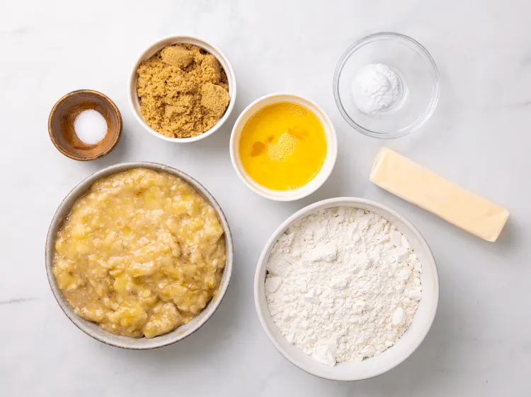
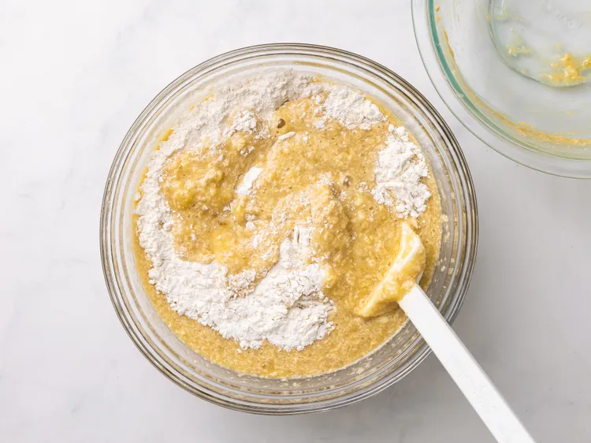
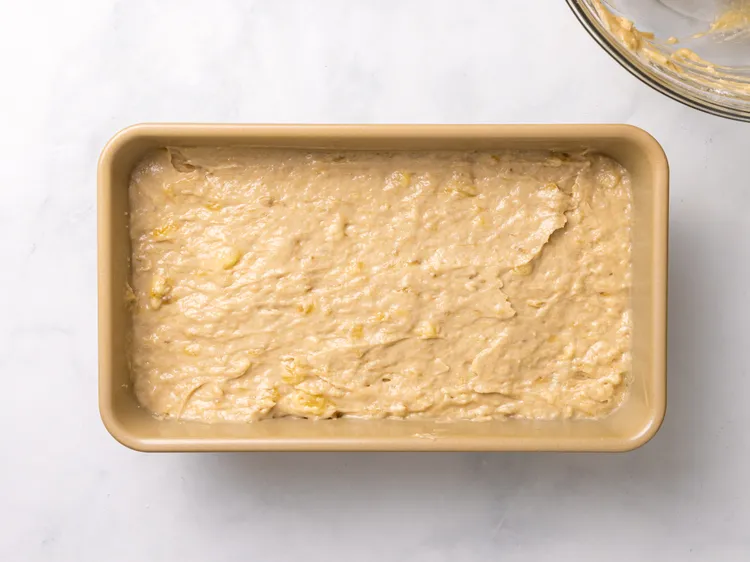
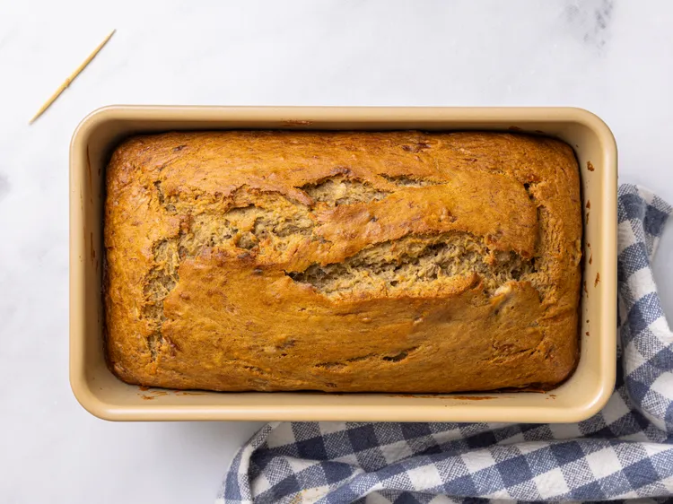
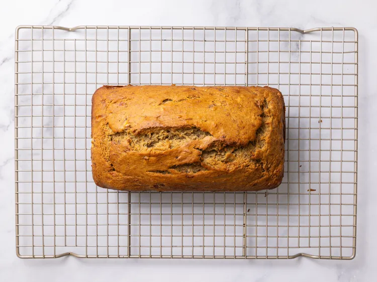
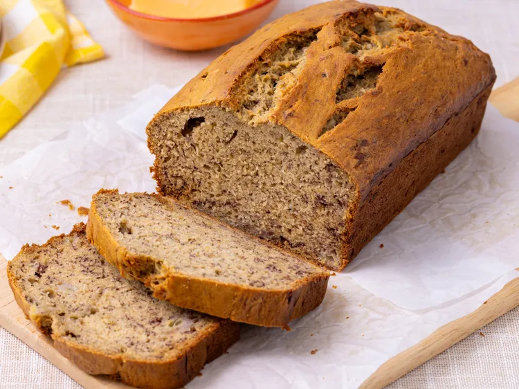

Introduction
I chose a banana bread recipie because I often make banana bread with my mom and hav gotten good at making it. Me and my brother also love the bread and some times he helps us make it. Below I have linked the origeonal recipie with a button, I hope you enjoy the recipie.
Original Recipe
Cooking Utenciles
Ingredients
(Each work as links to buy the ngredients)
Directions
- Preheat the oven to 350 degrees F (175 degrees C). Lightly grease a 9x5-inch loaf pan. Get out the ingredients for the banana bread such as mashed bananas, butter, flour, brown sugar, beaten eggs, salt, and baking soda.

- Combine flour, baking soda, and salt in a large bowl. Beat brown sugar and butter with an electric mixer in a separate large bowl until smooth. Stir eggs and mashed bananas into the sugar and butter mixture until well blended. Stir banana mixture into flour mixture until just combined. Banana bread batter being mixed in a glass bowl with a spatula.

- Pour the batter into the prepared loaf pan and spread the batter evenly.

- Bake in the preheated oven until a toothpick inserted into the center comes out clean, about 60 minutes.

- Let bread cool in pan for 10 minutes, then turn out onto a wire rack to cool completely.

- Enjoy!
